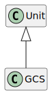

Class GCS
Hierarchy-Diagram
{kind=link}
Legend
 class
class
Hierarchy
- Unit
- GCS
Index
Constructors
Properties
Accessors
Methods
Constructors
constructor
- new GCS(name?, options?): GCS
-
Create a new unit
Parameters
-
Optionalname: stringUnit name
-
Optionaloptions: UnitOptionsUnit options
Returns GCS
-
Properties
Static Readonly EARTH_
EARTH_
Static Readonly EARTH_
EARTH_
Static Readonly EARTH_
EARTH_
Static Readonly EARTH_
EARTH_
Static Readonly ECEF
Static Readonly EPSG3857
Static Readonly EPSG4326
Static Protected Readonly UNITS
Static Protected Readonly UNIT_
UNIT_
Static Readonly UNKNOWN
Static Readonly WGS84
Accessors
aliases
- get aliases(): string[]
-
Unit aliases
Returns string[]
Alias names as array
base
- get baseName(): string
-
Returns string
definitions
- get definitions(): UnitDefinition[]
-
Returns UnitDefinition[]
name
- get name(): string
-
Unit name
Returns string
Name
- set name(name): void
-
Parameters
-
name: string
Returns void
-
prefix
- get prefixType(): UnitPrefixType
-
Returns UnitPrefixType
Protected prefixes
- get prefixes(): UnitPrefix[]
-
Returns UnitPrefix[]
Static EARTH_
- get EARTH_RADIUS(): number
-
Returns number
Mean earth radius
Deprecated
Use GCS.EARTH_RADIUS_MEAN
Methods
convert
- convert<T>(value, target): T
-
Convert a value in the current unit to a target unit
Type Parameters
-
T extends UnitValueType
Parameters
-
value: T
Value to convert
-
target: string | Unit
Target unit
Returns T
Converted unit
-
create
- create
Base Definition(): UnitFunctionDefinition<any, any> -
Get or create a definition from this unit to the base
Returns UnitFunctionDefinition<any, any>
Definition to base
create
- create
Definition(targetUnit): UnitFunctionDefinition<any, any> -
Parameters
-
targetUnit: Unit
Returns UnitFunctionDefinition<any, any>
-
Protected find
specifier
- specifier(prefix): GCS
-
Get the unit specifier
Parameters
-
prefix: UnitPrefix
Unit prefix
Returns GCS
Unit with specifier
-
Static convert
- convert<T>(value, from, to): T
-
Convert a value from a specific unit to a target unit
Type Parameters
-
T extends UnitValueType
Returns T
Converted unit
-
Static find
Static fromJSON
- fromJSON<T>(json): T
-
Get a unit from JSON
Type Parameters
-
T extends Unit
Parameters
-
json: any
JSON object
Returns T
Unit if found
-
Geodetic coordinate system.